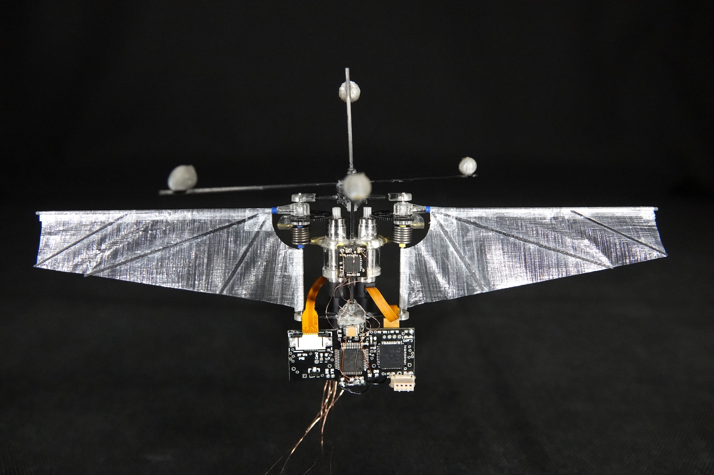
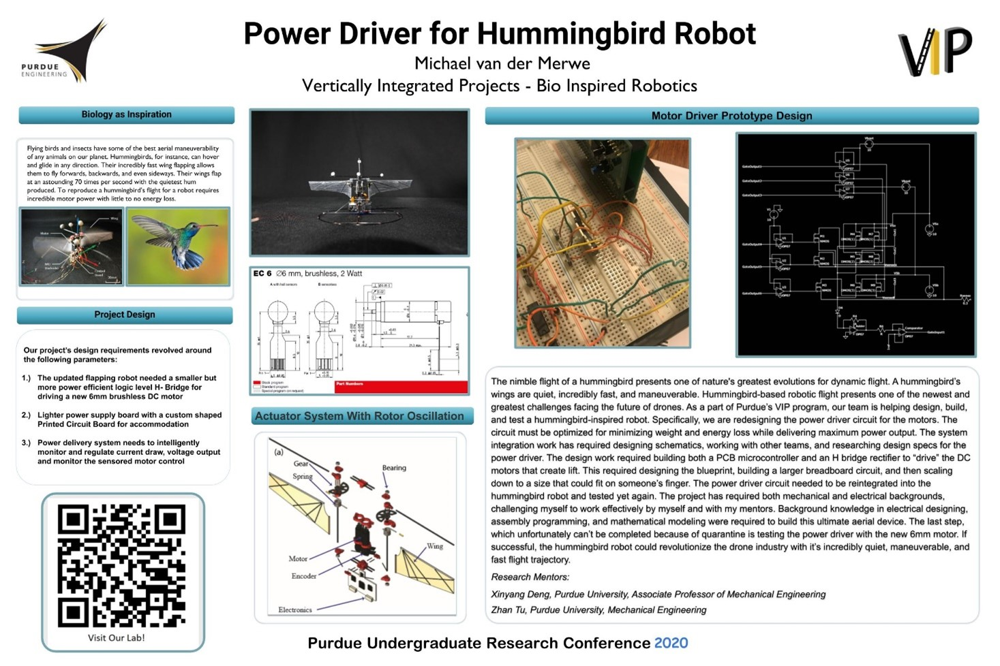

For my senior design project, I worked on Purdue's prestigious Hummingbird Robot. I focused on optimizing BLDC motor control through an advanced H-bridge design utilizing hall sensors for position feedback and a PID controller to manage the motor's back and forth motion with a 10:1 gear ratio. As the oldest in my group, I led the design, prototyping, and optimization.
The core of the project revolves around creating an efficient signal pathway, using speed as the input and generating a 50kHz PWM output that mimics an ideal square wave, essential for precise motor operation.
The design challenges include handling the complex dynamics of switching frequencies and motor stopping, which can jeopardize the H-bridge due to inductive load currents. A comprehensive electronic schematic incorporates MOSFETs and BJTs to manage these issues by ensuring fast switching speeds, robust voltage handling, and minimal power loss through thermal management.
For command and control, the project utilizes an STM32 microcontroller to orchestrate the PWM signals across the H-bridge. The intricate setup includes two timers for the PWM and hall sensor signals, with a dedicated TIM1 for BLDC bridge FETs and TIM4 for hall sensor signals, ensuring precise motor commutation.
The system's PID controller, tuned in MATLAB, dynamically adjusts the PWM duty cycle based on real-time speed discrepancies to achieve desired motion profiles smoothly and efficiently.

More Information